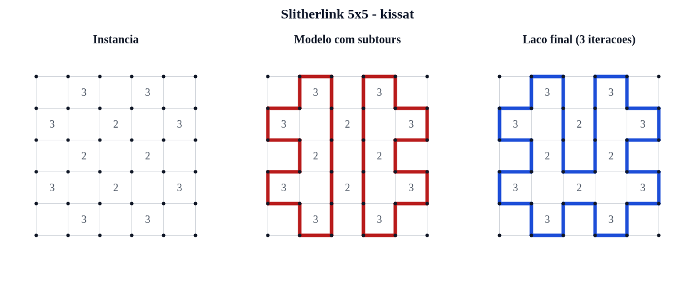

Codificacao CNF, eliminacao de subtours e comparacao CaDiCaL x Kissat
Dicas e graus sao locais. Conectividade e uma propriedade global.
Slitherlink e NP-completo; uma solucao candidata pode ser verificada em tempo polinomial.
Uma variavel booleana para cada aresta horizontal e vertical:
idx(h[i,j]) = 1 + iC + jidx(v[i,j]) = 1 + (R+1)C + i(C+1) + jUma clausula exige ao menos uma aresta.
Seis clausulas binarias proibem qualquer par.
Total: 7
Quatro triplas positivas exigem ao menos duas.
Quatro triplas negativas permitem no maximo duas.
Total: 8
Dicas 0 e 4 usam quatro unitarias; dica 3 e dual a dica 1.
Arthur4Grau 0 ou 2 garante que cada componente seja um ciclo, mas nao conecta ciclos distintos.
Um modelo SAT pode satisfazer todas as dicas e ainda conter dois ou mais subtours.
Ao menos uma aresta do ciclo isolado deve mudar.
SAT → analisar → contraexemplo → corte → SAT → ...O processo termina: cada corte elimina uma atribuicao e o conjunto de atribuicoes e finito.
Joao Caique7gerador.py: CNF e sanidade DIMACSrefinamento.py: componentes e cortessolver_runner.py: solvers e metricasvisualizar.py: antes/subtour/depoisParser, cardinalidade, cabecalho, literais, CNFs versionados, componentes e integracao real com CaDiCaL/Kissat.
| Instancia | N | Base | CaDiCaL | Kissat |
|---|---|---|---|---|
| 3x3 SAT | 24 | 99 | SAT, 1 iter. | SAT, 1 iter. |
| 4x4 UNSAT | 40 | 186 | UNSAT | UNSAT |
| 5x5 SAT | 60 | 305 | SAT, 2 iter. | SAT, 3 iter. |
| 6x6 UNSAT | 84 | 537 | UNSAT | UNSAT |
| 3x3 UNSAT | 24 | 85 | UNSAT | UNSAT |
| Problema 11 | 60 | 266 | UNSAT | UNSAT |
Todos os tempos ficaram abaixo de 4 ms no experimento registrado.
Gustavo9
Gustavo10